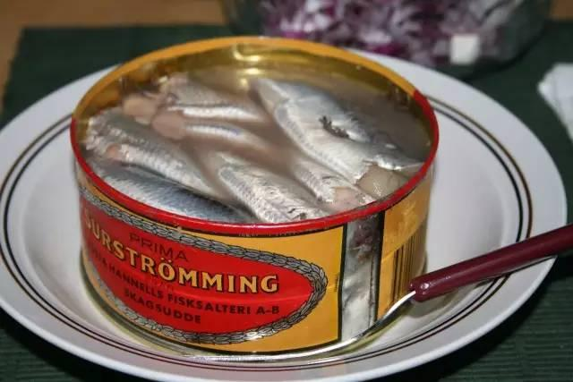
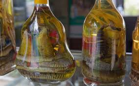

介紹5種奇怪的食物
瑞典鯡魚罐頭

瑞典鹽醃鯡魚是一種將鯡魚混合鹽巴、放於罐中醃漬發酵的瑞典
食品，盛行於瑞典北部，以帶有強烈異味為其特徵，其名稱中「
sur」意為「酸味的」，「strömming」意為「波羅的海鯡魚」。
其來源最有可能是早期瑞典人使用適量的鹽搭配發酵的方式來防
止食物腐化，以用來節省珍貴的鹽巴費用。另有一傳說是源自16
世紀時一群瑞典水手曾將部份即將腐壞的魚用哄騙的方式賣給幾
名芬蘭人，一年後水手們重回舊地時；遇見先前的芬蘭人問他們
還有沒有那些即將腐壞的魚賣，之後在好奇心驅使下瑞典水手便
試一試這些魚，發現味道也不錯。
近年來，鹽醃鯡魚因其發酵產生的劇烈臭味而網絡爆紅，甚至被
調侃為「生化武器」
蛇補酒

蛇補酒:早在二千多年前的《神農本草經》中就有記載，而且全身
都有藥用價值，稱：蛇肉有活血驅風、除痰祛濕、補中益氣的作
用，對風濕關節炎、肢體麻木、氣虛血虧、驚風癲癇及皮膚瘙癢
等症都有較好的療效。蛇膽、蛇骨、蛇蛻（處方名青龍衣，俗稱
蛇殼、蛇衣）、對治療坐骨神經痛，偏頭痛、 類風濕關節痛和晚
期癌症、麻風病等有較好的療效。蛇毒價格比黃金還貴十倍，是
國際市場上十分緊缺的藥 源。故有“天賜良藥”之美稱。蛇酒被譽
為“酒中之珍品”。
辣條

辣條，又名辣片，麻辣條，辣椒條，辣子條，豆腐皮，麻辣，辣
皮子。主要原料為麵粉，加入水，鹽，糖，天然色素等和麵，經
過膨化機高溫擠壓膨化，再加油，辣椒，麻椒等調味料，按GB27
60標準加入防腐劑等添加劑製成的面製品，也包括滷製肉類食品
。辣條誕生時間很早，辣條最早出現在80後的記憶中。辣條出現
之後很長時間，包括衛生，生產許可證等很多都會讓人產生懷疑
，確實如此，以前的辣條都會存在那樣這樣的問題，沒有生產許
可。其中最讓人擔心的就是衛生問題，辣條裡會放很多添加劑、
防腐劑。而且辣條的生產環境髒亂，不干淨。曾多次被媒體爆出
問題，加之監管部門監管不到位，導致辣條大量銷售於城鄉結合
部、縣城、農村地區。在城市也有零星分佈，大多會在小學門外
由小商販及小商店銷售。但隨著監管力度加大，辣條生產環境也
逐漸好轉，由原來的問題食品（如沒生產許可、衛生不合格等等
）轉變為受到很多年輕人喜歡的零食。雖然辣條生產情況整體好
轉，但衛生等問題依然存在。辣條屬於辛辣食品，建議適量食用
，若大量食用易引發健康問題，並應選擇安全生產廠家進行購買。
怪味百事
酸奶味

酸奶味可樂僅是味道近似乳酸菌，不過原材料就跟酸奶毫無關係
了。瓶身設計走乾淨簡潔路線，以白色為基調，上面規則排布樂
事logo，像是為聖誕節量身定做的特別款。百事給酸奶味可樂打
起“零卡路里“旗號，誘得年輕女性紛紛嘗試。味道與沖淡的養樂
多相似，容易給自己一個“不是在喝可樂”的心裡暗示。
冰爽黃瓜味

樂事青瓜味薯片已經在挑戰味蕾觸覺，冰爽黃瓜味可樂更是超越
了想像的極限。冰爽黃瓜味是2007年日本的期間限定飲品，薄荷
色透明液體在視覺上呈現清涼感，未嘗就一陣“透心涼”。入口即
刻滿腔濃郁黃瓜味，妙的是後味轉為薄荷香，名副其實怪口味。
倒在玻璃杯加冰塊，邊喝邊吃烤串，口感像極了冰鎮果酒。
卡布奇諾味

咖啡因與碳酸的有機結合，激發一天活力。融合蘇打水和濃縮咖
啡在可樂中，多味雜糅，有種說不出的奇異。卡布奇諾口味可樂
主要在東歐國家銷售，廣告裡成群男女將可樂倒入杯中分享，言
語動作間流露曖昧情意，跟偏暗色系的妖嬈可樂外觀有異曲同工
之妙。
馬肉刺身

因為熊本有養殖食用馬，因此熊本及福岡很多地方都可以看到馬
肉刺身，就連中華餃子館裡也會有馬肉刺身（菜單上是寫「馬刺
」）。口感上，生馬肉比較沒有油花，比牛肉多一些韌勁，比較
有嚼勁，由於本身沒有太重味道，吃的時候建議是沾著先和過薑
泥的醬油，比較能襯托馬肉的鮮。